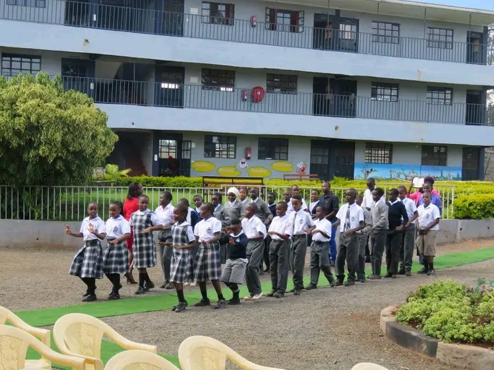
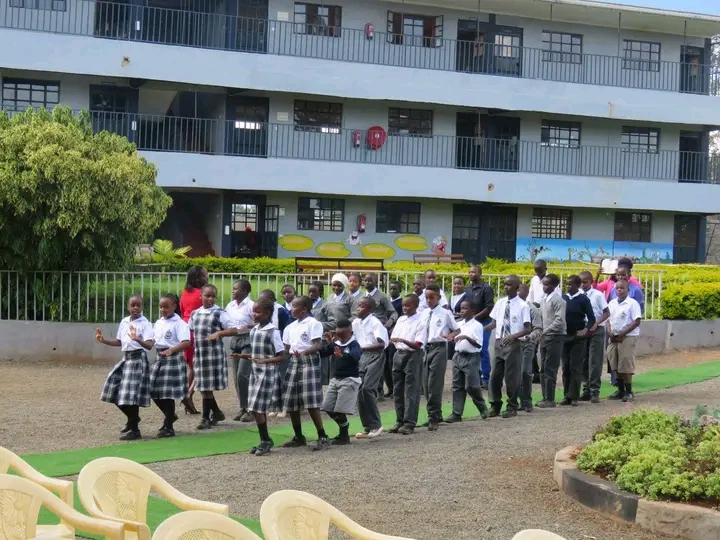
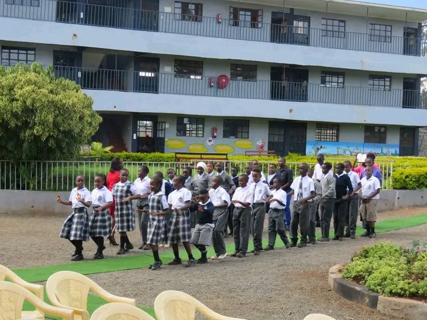

Empowering Future Leaders
Intake Ongoing

Ages: 4 to 5 years
Grade Levels: Pre-primary 1 (PP1) and Pre-primary 2 (PP2)
At the early years level, the focus is on play-based learning, where children develop basic foundational skills in literacy, numeracy, and social interaction. This stage emphasizes the development of communication, motor skills, and emotional well-being, preparing young learners for formal education through exploration and discovery.
Ages: 6 to 8 years
Grade Levels: Grade 1, Grade 2, and Grade 3
In the lower primary stage, students begin to dive deeper into subjects like Mathematics, Literacy, Environmental Studies, and Creative Arts. This phase emphasizes acquiring core competencies in communication, collaboration, critical thinking, and creativity. Practical activities, such as gardening, arts, and crafts, are incorporated to enhance the learning experience, fostering an inquisitive mindset.
Ages: 9 to 11 years
Grade Levels: Grade 4, Grade 5, and Grade 6
Upper primary introduces a broader range of subjects, including Science and Technology, Agriculture, Social Studies, and Life Skills Education. Students continue to develop cognitive, social, and emotional skills while engaging in problem-solving and project-based learning. The CBC in this phase encourages learners to apply what they have learned in real-life scenarios, building their confidence and decision-making abilities.
Ages: 12 to 14 years
Grade Levels: Grade 7, Grade 8, and Grade 9
At the junior secondary level, students specialize in different pathways based on their interests, including arts, sports, science, and technology. This stage is designed to further enhance learners' critical thinking, innovation, and leadership skills. Through subjects like Home Science, Business Studies, ICT, and Performing Arts, students are prepared for more advanced education and life beyond the classroom, ensuring they can adapt to diverse challenges.
We believe in nurturing every student’s physical and creative abilities.
Our school offers a wide range of sports activities and talent development programs that not only build physical fitness but also foster teamwork, discipline, and leadership.
By providing an environment where students can excel in athletics, performing arts, and other talents, we ensure they grow into well-rounded individuals.

Recognizing the importance of spiritual growth, we provide opportunities for students to reflect on their values and beliefs.
Through regular spiritual activities and guidance, we promote a sense of purpose and moral integrity in our students, helping them develop resilience, compassion, and a deep sense of responsibility toward others.

The arts are integral to fostering creativity and self-expression.
Sheridan, we encourage our students to participate in performing arts, including drama, music, and dance.
Our well-equipped facilities and expert instructors offer the perfect platform for students to hone their artistic skills and showcase their talents, building confidence and communication abilities.

In today’s rapidly evolving world, digital skills are indispensable. Sheridan prioritizes digital literacy by equipping students with the necessary technological tools and knowledge.
From coding to digital research, we ensure our students are prepared for the future, providing them with the skills they need to excel in a digital-driven world."Excellence in Education"
To be a leading institution in providing quality education that nurtures holistic development in students.
To offer a conducive learning environment that fosters academic excellence, character development, and lifelong learning.
Years of Excellence
Total Students
Graduates
Teachers